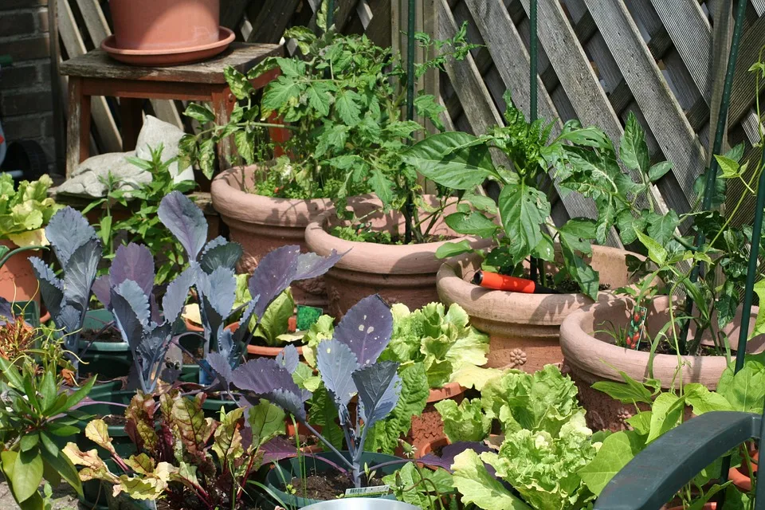

Pedro Augusto
Eu estou amando cultivar meu alimento em casa!
Sempre fui uma pessoa que gosta de comida e saúde, então decidi plantar meu próprio alimento em casa. Foi uma das melhores decisões que já tomei!
Aqui estão algumas das razões pelas quais estou amando plantar alimentos em casa:
O alimento é mais fresco e saudável: O alimento que eu colho do meu próprio jardim é sempre muito mais fresco do que o que eu compro no mercado. Isso significa que ele tem mais sabor e nutrientes.
Não há pesticidas ou fertilizantes químicos: Eu não uso pesticidas ou fertilizantes químicos no meu jardim, o que significa que o meu alimento é seguro para mim e para o meio ambiente.
Estou economizando dinheiro: Plantar o meu próprio alimento me ajudou a economizar muito dinheiro. Eu não preciso mais comprar tantos alimentos no mercado, e eu até posso vender o meu excedente para ganhar algum dinheiro extra.
Estou relaxando e me divertindo: Plantar alimentos é uma atividade muito relaxante e divertida. É uma ótima maneira de se conectar com a natureza e de se exercitar.
Se você está pensando em começar a plantar alimentos em casa, eu o encorajo a fazer isso! É uma ótima maneira de melhorar a sua saúde, economizar dinheiro e reduzir o seu impacto ambiental.